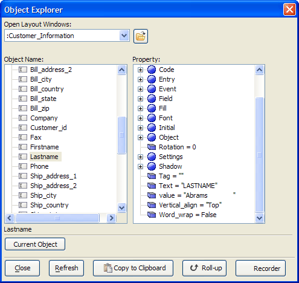
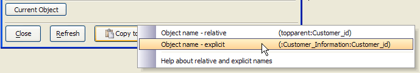

Object Explorer
Clicking View > Object Explorer when a Layout window (e.g. Form, Report, Label, Letter, Browse) has focus (in either run, or design mode) displays the Object Explorer window. This utility allows to you identify the components of a layout and examine all of their properties.
Unlike the Properties dialog boxes, which are displayed by right-clicking on an object, the Object Explorer is modeless, meaning that you can leave the Object Explorer window open while continuing to work on your layout. Picture
{kind=link}

If you need a reference to an object on your layout, select it in the Object Explorer and click Copy to Clipboard. The following menu allows you decide if you want a relative and explicit name for the object.

A particularly useful feature of the Object Explorer is the ability to find an object on a layout. For example, if you have a large, complex layout with many objects on it, finding "button23" might be difficult. You can just select the object name in the Object Explorer, and then click the Select Object button. Conversely, you can select an object on a layout, then click Current Object in the Object Explorer to see its properties.
The ability to view the Object Explorer in View Mode is useful to developers who might like to quickly see the effect of changing one of the properties of an object.
Relative and Explicit Object Names
Every object (i.e. button, field, embedded browse etc.) that you place on a form or browse has name. In a script, when you refer to an object on a form, you can use a "relative" or "explicit" object name.
The concept of relative and explicit names is best explained by analogy.
Assume you are telling someone how to find a particular person's home which is at 123 Main Street. If you are standing on Main Street when you are asked this question, your answer can be simply "go to number 123". This is a relative address because you are already on Main Street. Your answer is relative to Main Street.
However if you are standing on Walnut Street when you are asked this question, your answer needs to be a little more explicit. You can say "go to 123 Main Street". Of course, if you are in the United Kingdom when you are asked this question, your answer needs to be even more explicit. You might say "go to 123 Main Street, in Boston, Massachusetts, in the United States". This answer will allow you to find the person's house no matter where you are when you ask the question.
Similarly, if you have a script on a button on a form, and that script refers to another object on the same form, then a relative address for that object will be sufficient.
For example, say you wanted to refer to the "text" property of an object called " lastname ". The relative object name is " topparent:lastname ", and the relative property name is " topparent:lastname.text ". The object name can be interpreted as follows - start at the highest level of the form ( topparent ). This level contains an object called " lastname " (the : symbol is used to indicate that the object on the right is contained within the object on the left of the : symbol).
 Note : " topparent " is an alias that refers to the highest
level in the current form. Refer to Relative Addresses for more information on aliases.
Note : " topparent " is an alias that refers to the highest
level in the current form. Refer to Relative Addresses for more information on aliases.
If this form was called " customers ", then the explicit object name is " :customers:lastname ", and the explicit property name is " :customers:lastname.text ". The object name can be interpreted as follows - start at the highest level of Alpha Anywhere. This level contains the form " customers ". The " customers " form contains the object " lastname ".
The advantage of using relative names where possible is that your script will not break if the form name is changed. Also if you open more than one instance of the form, your scripts will continue to work. They may not work as you would expect if you use explicit names.
Consider the above example where the form is called " customers ". If you open two instances of this form, the first instance has the name " customers ", and the second instance has the name " customers0 " (or some other unique name). The script in the second instance of this form will continue to refer to the lastname control on the first instance of this form - probably now what you would want.